Vermillion
Eruption + Dragon Claw
VS Eruption + Earthquake into Blizzard
If Vanilluxe dies to crit Earthquake, send out Togekiss Hyper Voice
Eruption + Dragon Claw
VS Eruption + Earthquake into Blizzard
If Vanilluxe dies to crit Earthquake, send out Togekiss Hyper Voice
Water Spout + Explosion into Earthquake + Hyper Voice
VS use Water Spout + Explosion into Eruption + Hyper Voice
VS / 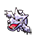 use Water Spout + Explosion into Hyper Voice + Earthquake
VS 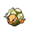 / 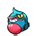 use Water Spout + Assurance
lead has Bright Powder 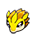 and high chance for to use Protect. Consider yourself unlucky if you miss Water Spout and it uses Protect
Water Spout and Weezing
VS 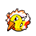 / Assurance
Use Assurance on T2
You can use X.SpAtk on Blastoise Turn 1 using Weezing's turn to ensure a 3-turn VS
VS 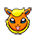 Rain Dance
VS 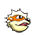 / 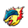 switch out Weezing at Turn 1 and send in Vanilluxe Blizzard
Water Spout + Explosion into Eruption + Hyper Voice
VS 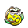 follow up with Eruption + Dragon Claw
Eruption + Earthquake into Hyper Voice + Earthquake
VS 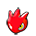 / 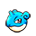 lead, Eruption + Dragon Claw
lead has Protect making it 4 turn
Sunny Day + Explosion into Eruption + Hyper Voice